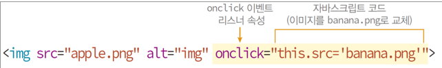

1.Javascript 1995년 넷스케이프 개발 Netscape Navigator 2.0 브라우저에 최초 탑재 웹 프로그래밍 개념 창시 1.1특징 -HTML 문서에 내장 조각 소스 코드 -스크립트 언어 인터프리터 실행 컴파일 필요 없음 -단순 C언어 구조를 차용 배우기 쉬움 2.자바스크립트 역할 2.1사용자의 입력 및 계산 -마우스와 키보드 입력은 오직 자바스크립트로만 가능 -계산 기능 2.2웹 페이지 내용 및 모양의 동적 제어 -HTML 태그의 속성, 콘텐츠, CSS 프로퍼티 값 동적 변경 2.3브라우저 제어 -브라우저 윈도우 크기와 모양 제어 -새 윈도우 열기/닫기 -다른 웹 사이트 접속 -히스토리 제어 2.4웹 서버와의 통신 -웹 페이지가 웹 서버와 데이터를 주고받기 2.5웹 애플리케이션 작성 -캔버스 그래픽, 로컬/세션 스토리지 저장, 위치정보서비스 등 3.코드의 위치 3.1자바스크립트 코드 작성이 가능한 위치 1) HTML 태그의 이벤트 리스너 속성에 작성 2) <script></script> 태그에 작성 3) 자바스크립트 파일에 작성 4. 특징 -<head></head>나 <body></body> 내 어디든 작성 가능 -웹 페이지 내에 여러 번 삽입 가능 